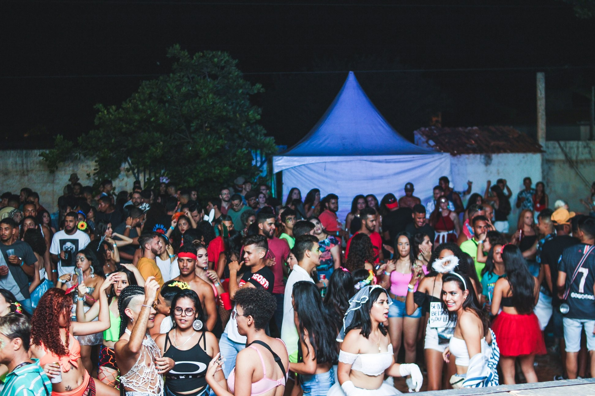
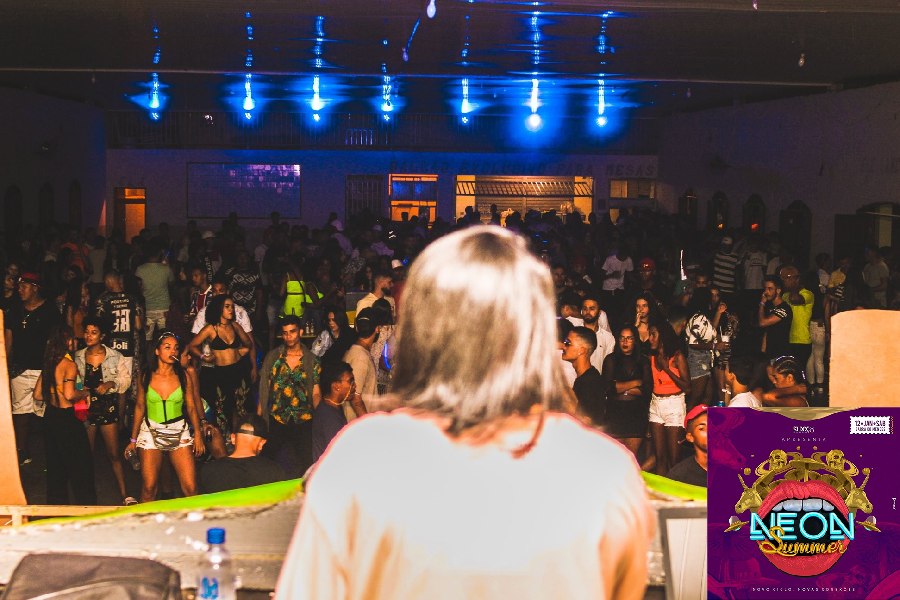

A Empresa que Agitava Barra do Mendes
Barra do Mendes já foi palco de eventos icônicos que marcaram uma geração de jovens, graças à Suxx Produções. Conhecida por sua energia vibrante e por promover festas inesquecíveis, a empresa foi um verdadeiro sinônimo de diversão e entretenimento na cidade. No entanto, nos últimos anos, a Suxx parece ter dado uma "sumida", deixando saudades em quem viveu os momentos proporcionados por seus eventos marcantes.
Uma experiência única, cheia de música e diversão, o Tchacabum ficou famoso por transformar noites comuns em uma explosão de alegria e espuma. Jovens de toda a região lotavam o evento para curtir ao som de DJs animados, enquanto se divertiam com a atração principal: a espuma que tomava conta do local, criando um ambiente descontraído e inesquecível.

Se a Suxx tinha um evento que era o carro-chefe, esse era o NEON Summer. Mais que uma festa, era um espetáculo visual e musical que atraía um público diversificado e apaixonado. Com luzes neon, decoração temática e artistas de renome, o evento se consolidou como o maior produzido pela empresa. Suas edições eram aguardadas com ansiedade, prometendo sempre superar as expectativas.

O FLUXO 074 era a festa que traduzia a essência da cultura jovem de Barra do Mendes. Com uma pegada mais urbana, o evento reunia amantes do estilo livre, do funk e da música eletrônica em uma celebração da liberdade e da diversão. Era o ponto de encontro perfeito para quem queria curtir sem hora para acabar.
Essas imagens foram adquiridas no Facebook da própria empresa Suxx Produções. Aqui
A pergunta que não quer calar é: o que aconteceu com a Suxx Produções? A empresa que sacudiu Barra do Mendes parece ter desaparecido dos holofotes, deixando uma lacuna na cena de eventos da cidade. Será que a Suxx está planejando um retorno triunfal? Ou será que seu legado ficará restrito às memórias dos momentos inesquecíveis que proporcionou?
Enquanto aguardamos respostas, fica o desejo de que a Suxx volte a trazer o brilho e a energia de seus eventos para Barra do Mendes. Afinal, uma cidade que já vibrou ao som do NEON Summer, do Tchacabum e do FLUXO 074 merece ter de volta o espírito animado que só a Suxx Produções sabia criar.